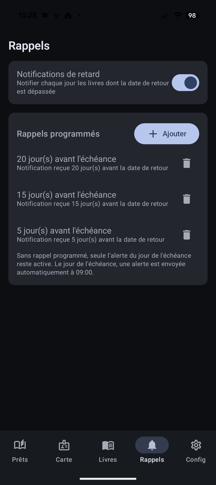

Prévenu(e) avant l'échéance
La bibliothèque, on y pense parfois un peu trop tard. Biblio Cuers s'en souvient à votre place et vous le rappelle au bon moment.
En pratique
- Vous choisissez le délai de prévenance qui vous convient : par exemple 3 jours avant la date de retour.
- Vous êtes notifié(e) automatiquement quelques jours avant, puis le jour J si le livre est toujours chez vous.
- En option, l'application peut aussi vous alerter chaque jour en cas de retard, jusqu'au retour.
- Chaque rappel concerne un livre précis : vous savez immédiatement quel livre rapporter.
Les points forts
- Des rappels réglables à votre main : chacun fixe son propre rythme.
- Plus de surprise de dernière minute ni de retard oublié.
- L'application fait le suivi tranquillement en arrière-plan, sans que vous ayez à y penser.
